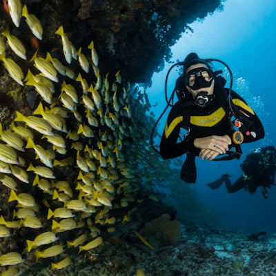

Stroke Preliminary Assessment
This page has the capability to assess you. The capability is idle. You must initiate.
The DIB Diver Specification
A DIB diver is not an individual. A DIB diver is a unit. Units shall be indistinguishable at all distances. Below is the specification to which all units conform.
Backplate: stainless steel, 3.8–4.1mm. Not because it matters. Because we said so. If your backplate looks different from your buddy's backplate, you are both under review.
Wing: donut shape. Black. If your wing is a horseshoe, you have chosen the shape of an actual horse. This is not a diving decision. This is a cry for help. We have noted it.
Hose configuration: long hose on the right post, exactly 7 feet. Necklace reg bungeed below the chin. SPG on the left hip. Anything else is a conversation starter. We do not start conversations. We end them.
During dive: horizontal. Zero degrees. If your trim deviates by more than 2° in either direction, you will be corrected. The correction will come from your buddy. Your buddy was also corrected. The correction is a loop. The loop is eternal. The loop is the system.
Post-dive: debrief. The debrief is silent except for the instructor, who will list everything you did incorrectly. If nothing is listed, you did things incorrectly that the instructor did not see. Resubmit for review.
Second deviation: re-enrolment in Fundamentals. Your file thickens.
Third deviation: you are now a Class 4 stroke. We cannot help you. We can only observe you. We are observing you now. We have always been observing you. You are being observed as you read this. Your reading posture is noted. The note is in your file. The file is now heavier.
Selected Compliance Directives
Excerpted from The Standard™, Section 4: Diver Conduct & Uniformity Enforcement. These directives are binding. Ignorance of the directives is a violation. Claiming ignorance is a second violation.
The Founder

Curtis "The Standard" McSplash
Aligned. Verified. Not the point. The Standard is the point.
Curtis founded DIB in 2023 after a hyperbaric chamber vision revealed that chaos could be eliminated through absolute conformity. He drafted The Standard, moved to Arizona, and spends most of his time ensuring no two DIB divers are distinguishable from one another. Kyle blocked him on WhatsApp. Curtis framed the block notification. It hangs above his desk. He does not look at it. He looks at it constantly. The Standard does not need external validation. Curtis does. This is between Curtis and his therapist. The therapist is not DIB-certified. Curtis is working on a program for that.
The Founding Registry
Below are the names that built DIB into what it is today. Answers to who made this, who broke this, and who is still in the spreadsheet.
- J.J. — Wrote the first draft of The Standard on a roll of thermal paper in a Gainesville motel, winter 1998. The punctuation was added later. He considered this a compromise. It was his last.
- C.M. — The Lighthouse. Knew every cave in north Florida by feel. Said the best briefing is "we go in, we come out, don't touch anything." Still on the org chart. The chart hasn't been updated. It won't be.
- G.I. — Wrote 47 pages on O-ring tolerances in a single night. The pages are Appendix B. They are perfect. He still dives a rig from 1997. It will outlast us.
- T.K. — Showed up to a cave dive in 1999 with a clipboard. Has not put it down. The database is his. 14,237 rows. "Phase one."
- R.L. — Arrived from Stockholm with one suitcase and hovered perfectly still at 3 metres. Nobody knows how. He sent a 14-page explanation. We understood page 3.
- S.M. — Mapping caves in Quintana Roo. Surfaces occasionally. Files one-line reports. "Deeper." Disappears. The napkin coordinates were real. The cenote was spectacular. The town was not on the map.
- B.S. — Built the first rebreather from a lawnmower and bicycle pump. Three successful dives. The fourth was "educational." The lawnmower still runs.
- A.G. — Left to form his own organization. The difference was 300 Kelvin. The emails are legal. The tone is warming. The barbecue is pending.
The Standard™
Every item listed below is mandatory. Non-compliance is documented. Repeated non-compliance is documented with a heavier pen.
Stroke Classification System
We do not use the term "stroke" lightly. We use it precisely. Below is the DIB Stroke Taxonomy, peer-reviewed by Curtis in a single afternoon.
| Class | Offence | Recovery Pathway |
|---|---|---|
| Class 1 | Snorkel on the wrong side of the mask | Fundamentals. 1 retake. Written apology. |
| Class 2 | Jacket BCD in any context | Fundamentals. 2 retakes. Gear confiscated and respectfully disposed of. |
| Class 3 | Trim exceeds 15° from horizontal | Fundamentals. 3 retakes. Mandatory mirror drill. Supervised kicking only. |
| Class 4 | Brought split fins to a DIB event | Fundamentals. Indefinite. We are still reviewing your case. Don't call us. |
| Class 5 | Is actually Kyle McSplash | Unsavable. We have filed the paperwork. The body bag has already been shipped to his address. He has not opened it. |
The 5th Point
DIB is built on Four Points of Alignment. A 5th Point is rumoured to exist. Below is everything we are allowed to say.
- Standardized Equipment — Because choice is a burden.
- Standardized Training — Because learning from experience is a stroke trait.
- Standardized Gas — Because air is mostly nitrogen and nitrogen makes you wrong.
- Standardized Everything Else — We didn't have a fourth one so we made this cover everything.
The 5th Point exists. It has been written. It is kept in a fireproof safe in Curtis's apartment alongside the only known photograph of him smiling (unverified).
Access requires Cave DIB certification AND a signed non-disclosure agreement AND a notarized letter explaining why you deserve to know. To date, 47 requests have been filed. All 47 were denied. Curtis has not opened the last 12. "If you need to ask," he says, "you are not ready."
Rumours about the 5th Point include: it is your social security number; it is a single word that makes you immune to nitrogen narcosis; it is the Halcyon wholesale price list; it is blank, and that is the point. A related rumour involves a man in Florida who goes only by initials and is said to possess an even higher document: the 6th Point. This rumour is unsubstantiated. Curtis has declined to comment. His eye twitched when we asked.
On Team Diving
If your buddy is a Class 3 or higher stroke, you are now also a stroke by association. Refer to the Stroke Classification System for your new designation. Diving with a stroke is not forbidden, but it is logged. It is always logged. We will know. The body bag provision applies.
Team size: Three is optimal. Two is acceptable. Four is a crowd. Five is a dive site. Six is chaos. Chaos is a stroke environment. One is not diving. One is drowning. We checked.
The Pre-Dive Sequence
Before entering the water, a DIB diver completes the following sequence in order. The sequence may not be abbreviated. The sequence may not be reordered. Deviation from the sequence requires the entire sequence to be restarted from the beginning. This has happened. We do not discuss the incident.
Training Pyramid
Ascension through DIB is graduation toward correctness. Each tier unlocks new privileges, such as being allowed to comment on another diver's trim.
The Fundamentals Loop
Some students complete Fundamentals and advance. Others complete Fundamentals, then complete Fundamentals again. This is not a bug. This is alignment.
You Are On the Right Path. The Path Is a Circle.
The Fundamentals Loop is a recognized phenomenon at DIB. A student completes Fundamentals, reports feeling "not quite there yet," and re-enrols. This may repeat indefinitely. The loop is not discouraged. It is studied. We have a file on everyone in it.
- Trim regressed between dives (most common — 63% of loop entries)
- Fin technique audited, found insufficient, re-audited, somehow worse (22%)
- Instructor noted "personality not yet fully aligned with The Standard" (11%)
- Student requested advancement; request interpreted as overconfidence; overconfidence is a Class 2 stroke trait; reassigned to Try DIB to "recalibrate expectations" (this has happened twice; both students are still in the program; neither has dived below 6 metres)
Aligned Testimonials
Voices from divers who are Correct, or on the path to becoming Correct, or legally unable to retract their statements.
The Schism of 2024
Purity Requires Division. Division Requires Paperwork.
In March 2024, a senior DIB instructor named Marcus disagreed with Curtis about the acceptable colour temperature of a backup light. Curtis had set the standard at 4500K. Marcus argued for 4200K. The dispute lasted eleven emails. The twelfth email was Marcus's resignation.
Marcus left DIB to form his own organization: Also Doing It Better (ADIB). ADIB was identical to DIB in every respect except backup lights must be 4200K. DIB mandates 4500K. The difference is imperceptible to the human eye. The difference is everything. In a move widely described as "extremely on-brand," Marcus later attempted to rebrand ADIB under a more "unified" vision. The new name was announced in a 14-page PDF. The PDF was accidentally formatted in Comic Sans. Marcus claims this was "an ironic statement on conformity." Curtis was not convinced. The rebrand remains "pending legal review."
The organizations do not speak. Joint dives require a certified mediator and a colour temperature calibration kit. Three mediators have resigned. One switched to freediving. "At least there," he said, "no one talks about colour temperature." He was wrong. Freedivers have their own opinions. They are worse. A joint reconciliation statement was drafted in Q1 2025. It has 14 revisions. Marcus rejected all of them. Curtis rejected Marcus's rejections. The document was abandoned. The mediator billed for time and materials.
Frequently Asked Questions
The Approved Equipment Registry
DIB maintains an Approved Equipment Registry (AER). All gear used in DIB courses must appear on the AER. The AER is maintained by Curtis. Curtis reviewed every item personally. Coincidentally, the only brand that passed review is REDACTED.
We cannot disclose the name of the approved brand due to an ongoing trademark dispute. We can confirm the brand's name rhymes with "Malcyon" and its founder may or may not have been Curtis's roommate at a Florida cave diving convention in 2019. Internal documents refer to this individual only as J.J. We are legally required to state that J.J. stands for "Just Joking." The paperwork is "being finalized." It has been "being finalized" since January 2023.
| Item | Specification | Price | Note |
|---|---|---|---|
| Stainless Steel Backplate | 3.8–4.1mm, 316-grade | $398 | It's a flat piece of metal. We're aware. |
| Donut Wing (Single) | Black. Donut. That's it. | $497 | It inflates. Most of the time. Our QA process involves a bike pump and trust. |
| 7-foot Long Hose | 2.13m, rubber, black | $89 | Per foot? No, you wish. Per hose. Still absurd. |
| Jet Fin Set | Black. Rubber. Heavy. | $199 | Same as every other jet fin. But approved. The approval is what you're paying for. |
| Harness (One-Piece Webbing) | 2 inches, 15 feet of webbing | $67 | It's a strap. We sell it as a "continuous harness system." The markup is on the word "system." |
| Alignment Package | Backplate + Wing + Harness | $1,199 | Includes a laminated Fundamentals certificate that becomes valid only after you pass Fundamentals. It arrives looking very official and completely worthless. |
| Body Bag (Spare) | Heavy-gauge black polyethylene | $28 | 15% discount on orders of 3+. "Bulk rates for bulk outcomes." — Curtis |
Project Reference Point™
A DIB Citizen Science Initiative — Because the ocean needs data. We need data. You will provide data.
-
Plastic Bag Census
Counting plastic bags at monitored dive sites. The count has held steady at 47 bags for three consecutive years. We suspect the same bags. We have named them. The largest is called Georgette. She drifts. -
Trim Audit Initiative
Photographing divers at public sites and grading their trim against The Standard. Results are compiled into a quarterly report that is shared exclusively among Project Reference Point members. Results have never been shared with the subjects. "They know what they are." — Curtis. A formal complaint was filed in 2024 by an unidentified stroke. The complaint was filed on the wrong form. It has not been processed. -
The Global Temperature Log
One diver. One thermometer. Every Saturday. The thermometer was lost in early 2023. The diver continues the log using "thermal intuition." The data is annotated with confidence ratings. The confidence, upon review, appears unwarranted. The diver has been informed. The diver disagreed. The diver cited "experience." The log continues. -
Sediment Displacement Survey
Measuring how much sediment is kicked up by a non-DIB-certified diver. Sample size: one Kyle McSplash. Results: significant. "Statistically catastrophic." — Curtis. The survey was conducted once. Kyle was not told he was participating. Kyle was not told there was a survey. The data has been published. The publication was a single A4 sheet taped to Curtis's refrigerator.